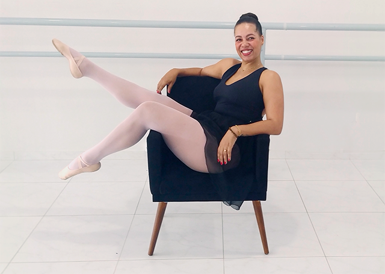
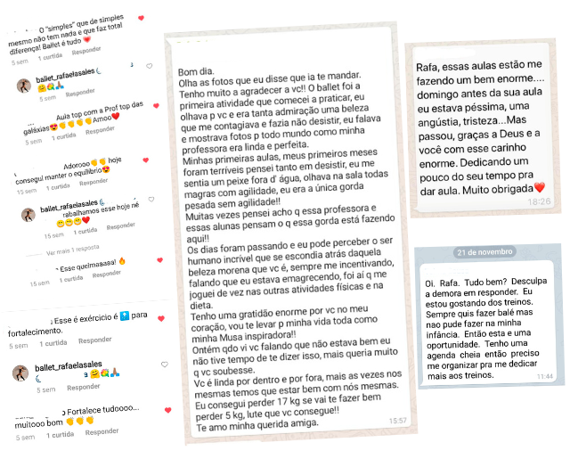

Ainda dá tempo de treinar e chegar satisfeita no verão!
Sim, ainda dá tempo. Você só vai precisar de uma cadeira e 10 minutos por dia!

#PROJETOVERÃO
Vem chegando o verão
O calor no coração
Essa magia colorida
Coisas da vida…
Só de pensar já vai dando aquele friozinho na barriga,
com o verão chegando
a gente começa a entrar naquele clima de“meu Deus,
e agora, preciso treinar”.
Nas redes sociais começam a surgir todas aquelas fotos de gente correndo,
malhando, caminhando,
andando de bike eparece que estamos ficando pra trás ,
mais um verão chegando e eu sem tempo pra malhação...
O problema é que a maioria das mulheres de hoje em dia,
que cuida da carreira,
da casa, do marido e dos filhos,tem malemá 2 horas livres por dia.
É muita exaustão com toda essa jornada dupla ou até tripla.
E só de pensar em gastar 1 hora inteira dessas poucas que restam,
já dá vontade de desistir e muitas desistem.
Resultado = Frustração.
Você também já se sabotou com os treinos para o verão?
Claro que sim, quem nunca, né!? E nem foi por querer, aposto.
É sempre assim,
ano após ano, as mulheres se frustram por tentarem entrar na
onda do verão e sem tempo pra se desenvolver e começar uma atividade,
desistem antes mesmo de começar, e as poucas que vão em frente,
desistem no meio do processo porque normalmente os treinos são de no mínimo 40 minutos e fora de casa.
A verdade é que as mulheres sabem que treinar é essencial
para a saúde e o corpo,
mas vivem uma correria diária.
Elas estão cansadas de gastar dinheiro e não conseguir frequentar a academia todos os dias,
ou pior, estão pagando sem nem frequentar!
A culpa bate né!?
E aí se pergunta: Por que desisti? Será que é só comigo? Será alguma conspiração? E promete que não vai mais deixar isso acontecer!
E não vai mesmo, porque eu vou te ajudar a não ficar frustrada. E garanto que nesse verão você já vai se sentir realizada com seu desempenho!
Se você ainda não me conhece, seja bem vinda! Eu sou a Rafaela Sales e a mais de 18 anos ajudo mulheres a se sentirem realizadas, satisfeitas e completas, através do ballet e suas técnicas.
Um pouquinho todo dia!
Algum tempo atrás algumas alunas da minha escola de ballet não estavam conseguindo
participar das aulas com frequência e tentavam recuperar todo
o tempo perdido em uma única aula.
A questão é que isso pode ser um gatilho para problemas de coração!
Exercício físico esporádico e intenso pode causar um aumento inesperado da pressão
arterial e da pulsação em
pessoas que não estão acostumadas com exercícios, disparando em quase 3x
o risco de problemas de saúde,
segundo uma pesquisa da Journal of American Medical Association (JAMA)
Então eu passei a disponibilizar algumas aulas do meu treinamento Bautes
(específico para desenvolver condicionamento físico com elegância e boa forma em mulheres adultas)
em sequências mais curtas e frequentes, assim elas poderiam treinar em finais de semana,
feriados prolongados, férias com a família, ou qualquer brechinha do dia, onde quer que estivessem.
Com esse exercícios mais curto, com maior frequência,
notamos uma melhora extraordinária no dia a dia das minhas alunas!
O resultado foi tão satisfatório que eu
resolvi abrir a oportunidade para todas as mulheres
que eu conseguisse alcançar!
E você também pode ter a sua chance de se sentir satisfeita por finalmente ter concluído um treino de verão!

Eu entendo as cobranças que nós, mulheres,
sofremos para estarmos bonitas o
tempo inteiro e a falta de tempo que temos também.
Por isso, eu não vou te passar qualquer exercício.
Organizei uma sequência de 15 aulas rápidas, com menos de 10 minutos,
para caber na rotina turbulenta.
Focadas em exercícios bastante intensos que
realmente vão te dar resultados,
para queimar e fortalecer os músculos nos lugares
que te incomodam, fazendo você ficar satisfeita,
em forma e com a auto estima lá em cima.
Desde o primeiro dia nós vamos trabalhar pernas,
braços, barriga e bumbum.
Além de queimar muuuuuitas calorias!
*Os resultados podem variar para cada pessoa. O sucesso depende de seguir as instruções, do esforço, objetivos e dedicação.
E como o meu objetivo é de entregar essa oportunidade para todas as mulheres possíveis, o investimento será super acessível!
Mas antes, da uma olha nesse vídeo pra ter uma ideia do que você vai receber nas aulas
Por menos de 1 real por aula
Você satisfeita por finalmente ter completado um treino de verão!
O valor para receber as nossas 15 aulas extremamente
focadas e intensas, que realmente
vão te dar resultados, para trabalhar pernas,
braços, barriga e bumbum, queimar e fortalecer os
músculos nos lugares que mais te incomodam, fazendo você ficar em forma e com a auto estima lá em cima, será de apenas R$ 14,85!
Você não vai precisar de nenhuma material extra ou equipamento específico, todo o
programa pode ser realizado apenas com uma
cadeira simples, descalça no chão ou com um tapete.
Esse é o único treino acessível, divertido e específico para mulheres adultas para você se sentir satisfeita por finalmente ter completado um treino de verão. Menos de 10 minutos por dia, menos de 1 real por aula!
Clique no botão para entrar na plataforma, preencha os dados do seu cartão de crédito ou emita o seu boleto.
Assim que o pagamento for computado você receberá um email com seu login e senha para entrar e começar a praticar!
P.S: Esse treinamento é uma edição especial para o verão e não deve ficar muito tempo disponível.
Talvez essa seja a sua única chance
de finalmente se sentir satisfeita e realizada por ter completado um treino de verão.
Clique no botão agora e garanta sua vaga!